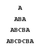
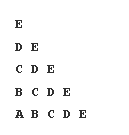

This article contains all the important pattern problems that you must solve before starting DSA. This is a part of the Striver's A2Z DSA Course/Sheet.
Note: If you find the sheet useful, you can also contribute an article or solution for any problem to be published on takeuforward.org! Click here for more details.
Patterns: Learn Important Pattern Problems
| SI. No. | Pattern | Article | TUF+ Link | TUF+ Editorial | Solution | |
|---|---|---|---|---|---|---|
| 1 |  | Link | Link | Link | Link | |
| 2 | Link | Link | Link | Link | ||
| 3 |  | Link | Link | Link | Link | |
| 4 |  | Link | Link | Link | Link | |
| 5 |  | Link | Link | Link | Link | |
| 6 | Link | Link | Link | Link | ||
| 7 |  | Link | Link | Link | Link | |
| 8 |  | Link | Link | Link | Link | |
| 9 |  | Link | Link | Link | Link | |
| 10 |  | Link | Link | Link | Link | |
| 11 |  | Link | Link | Link | Link | |
| 12 |  | Link | Link | Link | Link | |
| 13 |  | Link | Link | Link | Link | |
| 14 |  | Link | Link | Link | Link | |
| 15 |  | Link | Link | Link | Link | |
| 16 |  | Link | Link | Link | Link | |
| 17 |  | Link | Link | Link | Link | |
| 18 |  | Link | Link | Link | Link | |
| 19 |  | Link | Link | Link | Link | |
| 20 |  | Link | Link | Link | Link | |
| 21 |  | Link | Link | Link | Link | |
| 22 |  | Link | Link | Link | Link |